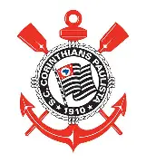
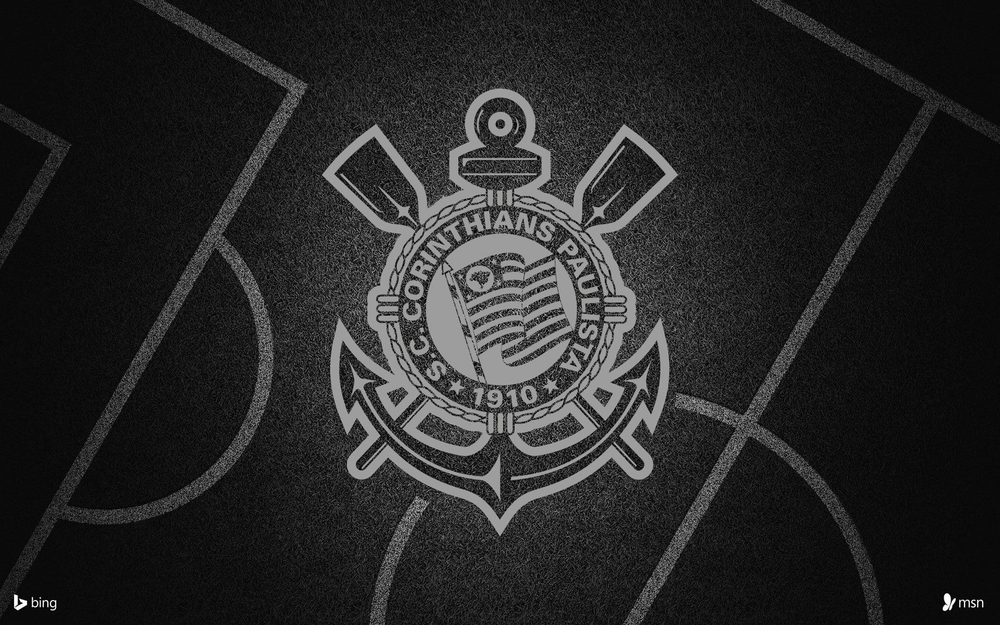

Criação Do Corinthians e TÃtulos
O Sport Club Corinthians Paulista foi fundado em 1º de setembro de 1910, na cidade de São Paulo, por um grupo de operários do bairro do Bom Retiro.
Contexto da Criação
Na época, o futebol no Brasil era um esporte elitista, praticado apenas pelas classes mais altas. Inspirados por uma equipe inglesa chamada Corinthian FC, que estava em excursão pelo Brasil, cinco operários — Joaquim Ambrose, Antônio Pereira, Rafael Perrone, Anselmo Correia e Carlos Silva — decidiram criar um time que representasse o povo.
🆠TÃtulos Internacionais
- Mundial de Clubes da FIFA: O Corinthians é bi-campeão mundial sendo em 2000 e 2012
- Copa Libertadores da América: 2012
- Recopa Sul-Americana: 2013
🇧🇷 TÃtulos Nacionais
- Campeonato Brasileiro: 1990, 1998, 1999, 2005, 2011, 2015, 2017
- Copa do Brasil: 1995, 2002, (Vice em 2018 e 2022)
- Supercopa do Brasil: (Vice em 1991 e 2018)
- Campeonato Brasileiro Série B: 2008
🅠TÃtulos Estaduais (Paulistão)
- Campeonato Paulista: 31 tÃtulos (maior campeão ao lado do Palmeiras) Anos: 1914, 1916, 1922, 1923, 1924, 1928, 1929, 1930, 1937, 1938, 1939, 1941, 1951, 1952, 1954, 1977, 1979, 1982, 1983, 1988, 1995, 1997, 1999, 2001, 2003, 2009, 2013, 2017, 2018, 2019 e 2025
🛡️ Outros TÃtulos Relevantes
- Torneio Rio-São Paulo: 1950, 1953, 1954, 1966